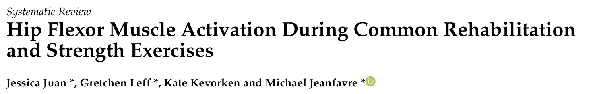
🔖原文标题（J Clin Med 2024;13:6617，开放获取）
📚 文献信息
▪ Juan J, Leff G, Kevorken K, Jeanfavre M. Hip Flexor Muscle Activation During Common Rehabilitation and Strength Exercises. J Clin Med. 2024;13(21):6617.
▪ 作者来自斯坦福医疗中心门诊骨科与运动医学康复部
▪ 系统综述，PROSPERO 注册号 CRD42024556236
▪ DOI：10.3390/jcm13216617
说到髋，大家第一反应往往是臀中肌、臀大肌——练后侧的文章和动作库多得数不过来。可髋前方这块肌肉，平时更多是被“放松”“拉伸”，很少有人认真想过它该怎么练。
其实髂腰肌的位置很特殊：它紧贴髋关节前方的盂唇和关节囊，收缩时能把股骨头往后压，减少前向剪切力。有学者把它比作髋关节的“肩袖”。对髋臼发育不良（成人中约 5.2%）、髋关节微不稳这类前方骨性覆盖不够的人来说，它更是重要的动态稳定结构。
除此之外，全髋置换前入路术后有 2.2%～2.4% 的人会出现髂腰肌腱病；短跑、踢球需要快速、有力地屈髋；髋骨关节炎的人屈髋肌常常萎缩，爬楼梯能慢上一半。这些人都需要练髂腰肌，但练什么动作、按什么顺序加量，一直没人系统整理过。
这篇综述做的就是这件事：把测过髂腰肌肌电（EMG）的研究找出来，看看常用动作到底能把它激活到什么程度，再据此排出一套进阶方案。
2024 年 1 月检索 PubMed、CINAHL 和 Embase，检索式由医学院图书馆员把关。原文图 1 和附图 A1、A2 是三个数据库的检索截图，整理如下：
检索策略（原文图 1、附图 A1、A2）
| 数据库 | 检索式 | 结果 |
|---|---|---|
| PubMed #8 | (electromyograph*[tiab] OR electromyography[majr]) AND "hip flexor"[tiab:~2] AND (exercise* OR train* OR biofeedback OR activat* OR activit* OR "Exercise Therapy"[mesh] OR therap*[tiab]) | 59 |
| PubMed #16 | hip flexor emg study（屈髋肌 肌电 研究） | 276 |
| PubMed #14 | hip exercise emg（髋 训练 肌电） | 1295 |
| PubMed #15 | iliopsoas emg（髂腰肌 肌电） | 93 |
| CINAHL | (MM "Electromyography" OR electromyogra*) AND (MH "Therapeutic Exercise+" OR exercise* OR train* OR biofeedback OR activat* OR activit* OR therap*) AND (hip N2 flexor) | 64 |
| Embase | ('electromyography'/exp/mj OR electromyogra*) AND ('exercise'/de OR exercise* OR train* OR biofeedback OR activat* OR activit* OR therap*) AND (hip NEAR/2 flexor) | 110 |
🔖检索词保留英文原文，括号内为中文释义
表 1 研究问题与纳入、排除标准
| 项目 | 纳入 | 排除 |
|---|---|---|
| 研究对象 | 健康人（无合并症，无腰痛、髋痛史） | 动物、尸体研究，病理人群 |
| 干预 | 测量屈髋肌肌电的研究 | 没有专门测量髂腰肌肌电 |
| 对照、结局、设计、时间 | 不限 | 不限 |
研究问题只有一个：健康人做哪些髋部动作时，屈髋肌激活最高？
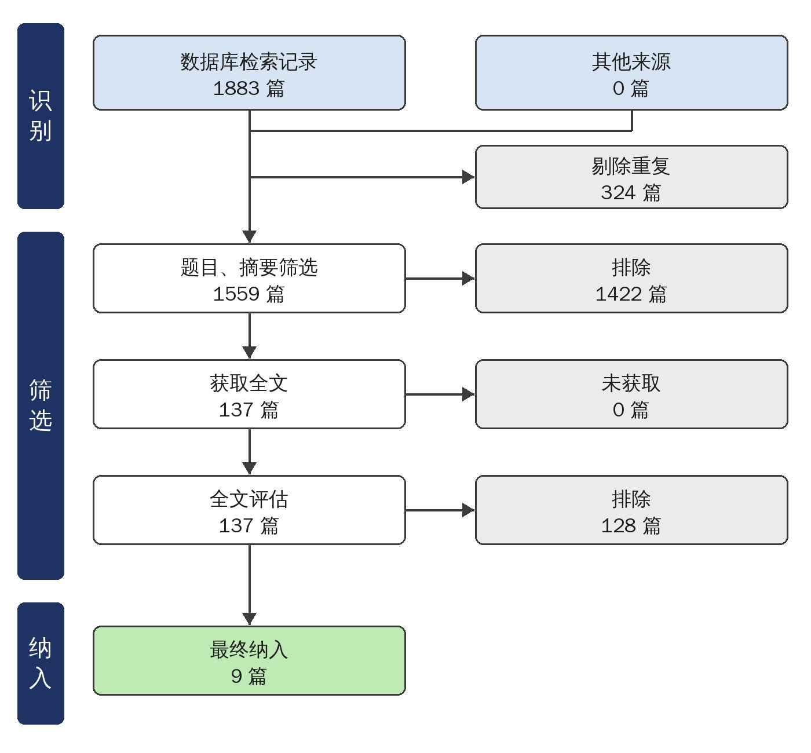
🔖原文图 2 文献筛选流程（中文重绘）
1883 条记录，去重后 1559 篇，读了 137 篇全文，最后只剩 9 篇。其中 6 篇横断面研究、2 篇非随机交叉试验、1 篇描述性实验室研究，合计 109 名 20～40 岁的健康成人。样本量最小的只有 6 个人。
表 2 纳入研究的基本情况
| 研究 | 设计 / 对象 | 电极与测量 | 主要发现 |
|---|---|---|---|
| Andersson 1997 | 横断面；6 名健康人，平均 25 岁 | 髂肌针电极（另有表面电极）；仰卧训练凳上做躯干或下肢抬起；%MVIC | 屈膝或下肢不固定时屈髋肌更活跃；屈膝、腿不固定的起身早期就会动员髂腰肌；向心收缩肌电更高 |
| Hu 2011 | 非随机交叉；17 名健康女性，28.7 岁 | 髂肌、腰大肌针电极；仰卧直腿抬高 20 cm 保持 10 秒，再加负重；振幅 | 直腿抬高时腰大肌主要稳定躯干，髂肌才是屈髋主力；加负重激活更高 |
| Jiroumaru 2014 | 横断面；10 名健康男性，27.2 岁（6 人加做 MRI） | 表面电极；0°、30°、60°、90° 屈髋等长收缩；均方根值 | 髂肌长度变化小、肌电变化也小，推测屈髋角度越大髂腰肌贡献越大 |
| Okubo 2021 | 横断面；18 名健康男性，25 岁（9 人数据被剔除） | 腰大肌针电极；主动直腿抬高的向心、顶端保持、离心阶段；%MVIC | 腰大肌在腿动之前就开始激活，越接近屈髋末端越高 |
| Yamane 2019 | 横断面；10 名健康男性，21.1 岁 | 腰大肌、髂肌针电极；直腿抬高 30°/45°/60°，外展 0°/20°（文中另作 30°），外旋 0°/30°（文中另作 20°）；%MVIC | 抬到 60° 时两块肌肉激活最高；屈髋角度不变时，加外展、外旋变化不明显 |
| Kim 2016 | 横断面；20 名健康人（8 男 12 女），20.5 岁 | 表面电极贴在股直肌内侧、腹股沟韧带下方；主动直腿抬高；%MVIC | 直腿抬高比仰卧起坐更适合练屈髋肌 |
| Andersson 1995 | 横断面；7 名健康人（4 男 3 女） | 超声引导针电极，髂肌、腰大肌；站、坐、卧多种任务；振幅 | 站立时对侧伸腿，髂肌稳定骨盆与髋；对侧负重大时腰大肌参与稳定腰椎；多数情况下两块肌肉激活模式相近 |
| Philippon 2011 | 描述性实验室研究；10 名健康人 | 超声引导针电极；13 个髋部康复动作；振幅 | 整理出髂腰肌肌腱炎患者应避开的动作（原研究目的是找练臀中肌又少用髂腰肌的动作） |
| Sugajima 1996 | 非随机交叉；11 名健康男性，23.3 岁 | 针电极；站立位屈髋 60° 和 120° 等长收缩，水中与陆上对比；振幅 | 水浸让髂腰肌动员了更大的运动单位 |
🔖按原文表 2 整理。MVIC：最大自主等长收缩
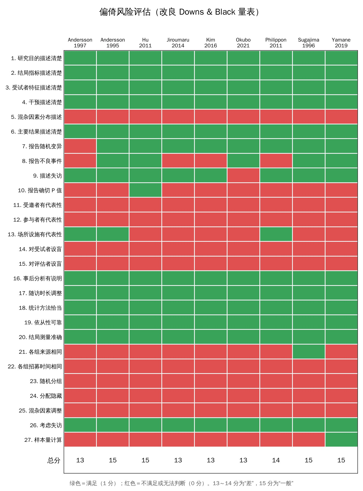
🔖原文表 3 偏倚风险评估（中文重绘）
用改良 Downs & Black 量表打分，9 篇都在 13～15 分之间：4 篇 13 分、1 篇 14 分，属于“差”；4 篇 15 分，算“一般”。作者解释说，有些失分项（比如对受试者设盲）在肌电研究里本来就做不到。这话没错，但样本量计算、混杂因素调整这些项几乎全军覆没，就不是研究类型能解释的了。
更有意思的是，作者专门请了一位肌电专家（Joyce Campbell 博士）逐篇挑毛病，结论很直接：
表 4 各研究肌电方法的局限
| 研究 | 方法要点 | 主要问题 | 临床可用性 |
|---|---|---|---|
| Andersson 1995 | 带通 10～1000 Hz；采样 0.5 kHz；取稳定后前 2 秒 | 低切滤波只有 10 Hz；在收缩稳定后才采样 | 可用于临床 |
| Andersson 1997 | 带通 10～1000 Hz；取动作前 200 ms | 针电极和表面电极数据混在一起分析，没考虑容积传导 | 谨慎使用 |
| Hu 2011 | 带通 20 Hz～1 kHz；采样 2 kHz；取动作开始后 5～10 秒中的 3 秒中位数 | 滤波过程描述混乱；方法学有问题（但双侧腰大肌同时激活支持其稳定脊柱的作用） | 可用于临床 |
| Jiroumaru 2014 | 表面电极；未报告滤波；采样 1000 Hz | 所用方法支撑不了文中的结论 | 临床价值有限 |
| Kim 2016 | 表面电极；未报告滤波；采样 1500 Hz | 没考虑容积传导和皮肤移动；没报告个体间标准差 | 谨慎使用 |
| Okubo 2021 | 带通 20～500 Hz；采样 1000 Hz；用算法判断起始时间 | 表面电极在低强度时测不到肌电，不能据此判断激活先后；500 Hz 高切对针电极不够 | 表面电极数据价值有限；针电极数据可用 |
| Philippon 2011 | 未报告带通和采样时段；采样 1200 Hz | （同一次测试内的相对排序有参考价值） | 可用于临床 |
| Sugajima 1996 | 带通 100 Hz～10 kHz；按“尖峰”分析运动单位 | 用力增大后动作电位重叠，单个尖峰无法区分；以 500 µV 为界划分大小运动单位较随意 | 谨慎使用 |
| Yamane 2019 | 带通 20～500 Hz；采样 1000 Hz | 没测力就假定 60° 时屈髋力矩更大；把针电极 500 Hz 以上信号全滤掉了 | 临床价值有限 |
能放心用的数据，其实没几组。下面的结果要带着这个前提看。
三种测量单位（%MVIC、振幅、均方根值）没法合并，作者分开画了 7 张图。原图横轴标签全是英文、斜着排，这里按附录 E 的原始数据改成了中文横向条形图。
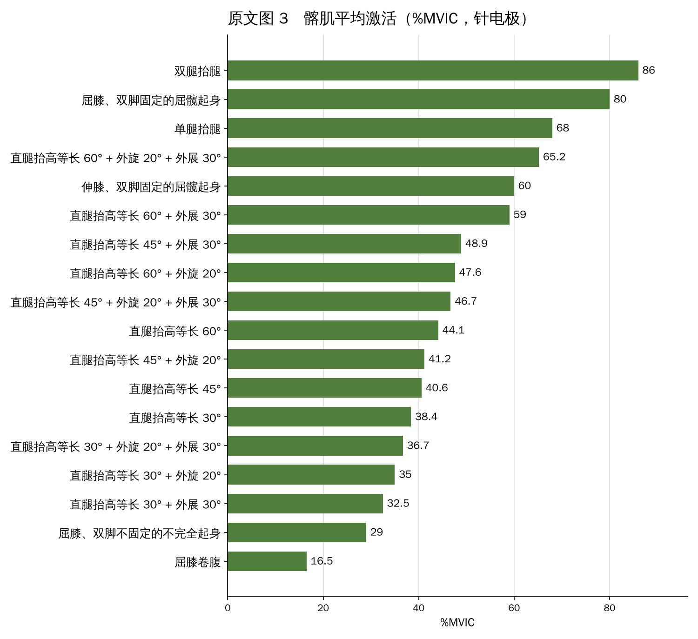
🔖原文图 3 髂肌平均激活（中文重绘）
髂肌排前三的是：双腿抬腿 86%、屈膝双脚固定的屈髋起身 80%、单腿抬腿 68%。直腿抬高等长保持里，60° 明显高于 30°；而普通卷腹只有 16.5%——练腹肌的动作，髂肌基本没怎么出力。
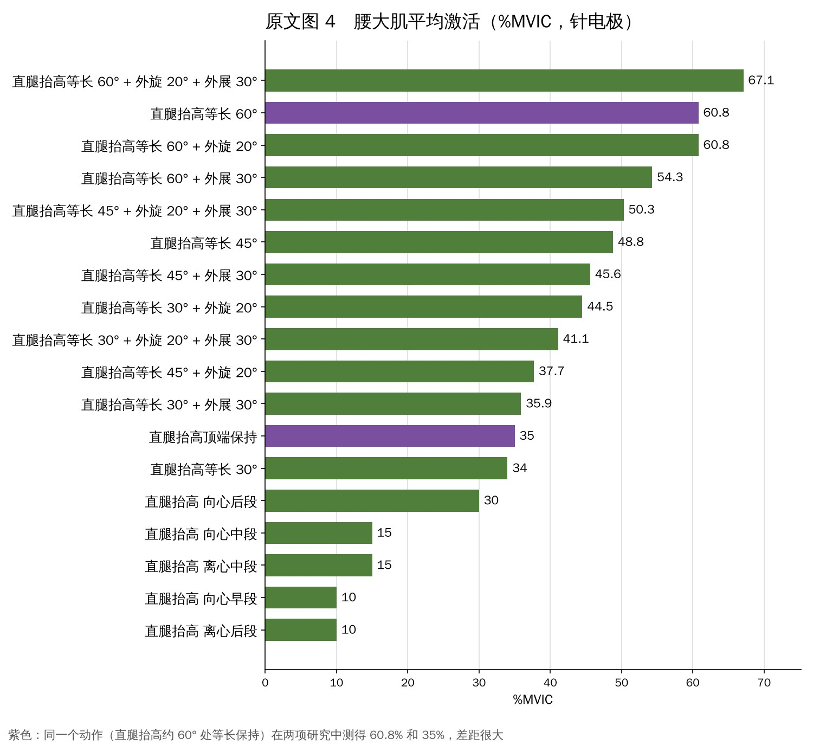
🔖原文图 4 腰大肌平均激活（中文重绘）
腰大肌也是一样的规律：直腿抬高抬得越高，激活越多，60° 加外旋外展时到 67.1%。但注意两根紫色的柱子——几乎是同一个动作，Yamane 测出来 60.8%，Okubo 测出来只有 35%。差了将近一倍，说明不同研究之间的数字不能直接横比。
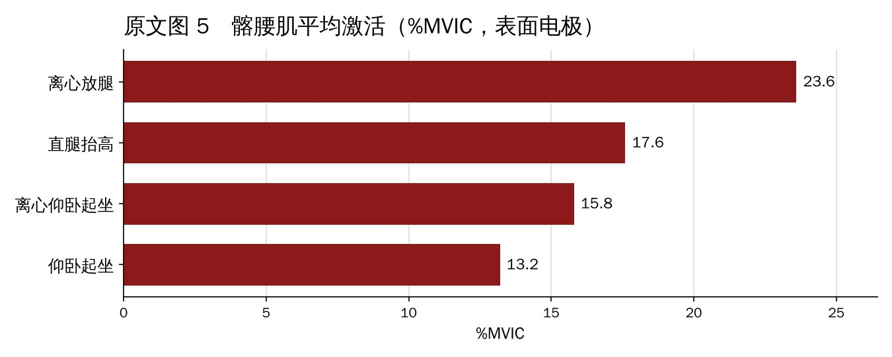
🔖原文图 5 髂腰肌平均激活（表面电极，中文重绘）
这一组用的是表面电极（Kim 2016），数值普遍偏低。离心放腿 23.6% 最高，仰卧起坐 13.2% 最低。髂腰肌埋得很深，表面电极测到的信号里混了多少股直肌、缝匠肌，很难说。
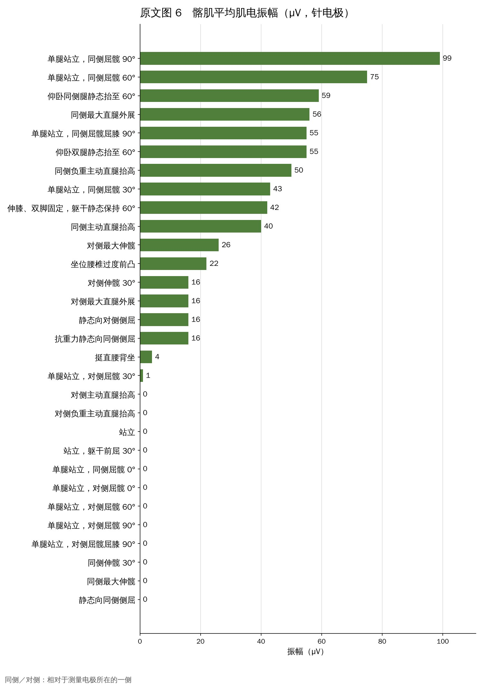
🔖原文图 6 髂肌平均肌电振幅（中文重绘）
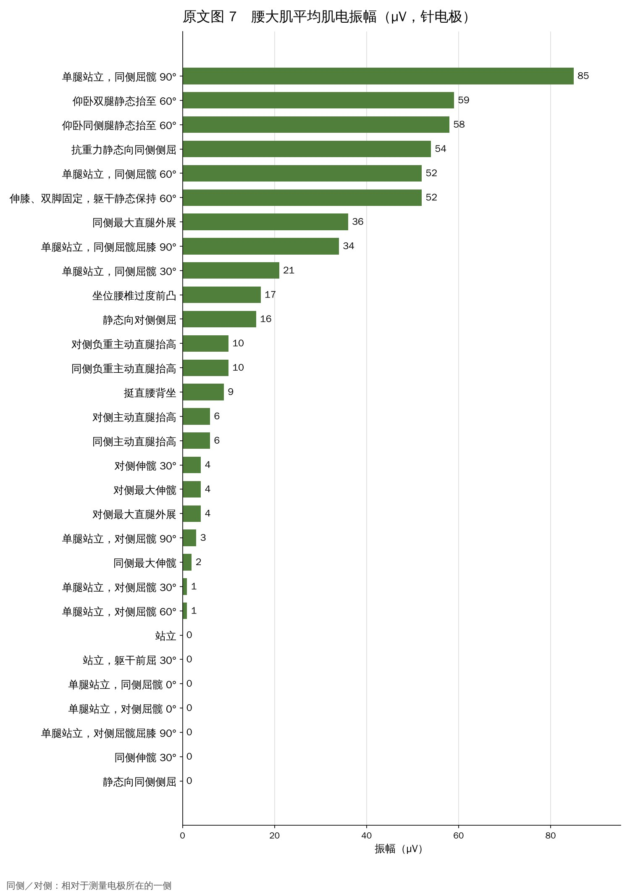
🔖原文图 7 腰大肌平均肌电振幅（中文重绘）
这两张图来自 Andersson 1995。站立位把一侧髋屈到 90°，髂肌 99 µV、腰大肌 85 µV，是所有站姿动作里最高的。有两个结果挺值得临床注意：一是最大直腿外展时髂肌也有 56 µV，不屈髋也能练到它；二是抗重力向同侧侧屈时腰大肌达到 54 µV，说明它在躯干侧向稳定里干了不少活。
另外，做直腿抬高时，髂肌主要是抬腿那一侧在用力，对侧几乎是 0；腰大肌则两侧差不多（都是 6 µV 左右）。作者据此认为，直腿抬高时腰大肌更像是在稳住腰椎，真正负责屈髋的是髂肌。
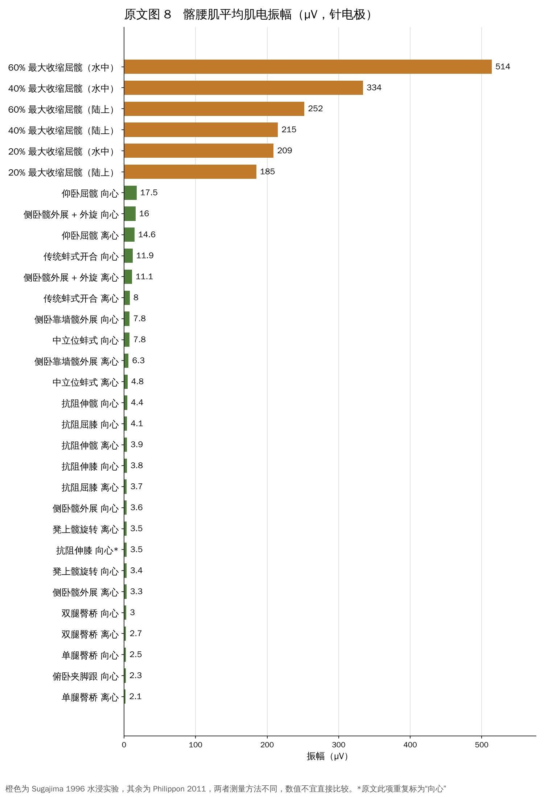
🔖原文图 8 髂腰肌平均肌电振幅（中文重绘）
这张图把两项研究放在了一起，读的时候要分开看。橙色是 Sugajima 的水浸实验：同样是 60% 最大收缩，水里 514 µV，陆上 252 µV。绿色是 Philippon 的 13 个康复动作，仰卧屈髋（17.5 µV）和侧卧髋外展加外旋（16 µV）最高；臀桥、俯卧夹脚跟这些动作，髂腰肌几乎不参与。
如果是髂腰肌腱炎、髋前方疼的患者，想练臀肌又不想刺激前方，这部分数据倒是很实用：臀桥、侧卧髋外展（不加外旋）、抗阻伸髋这几个，髂腰肌都很安静。
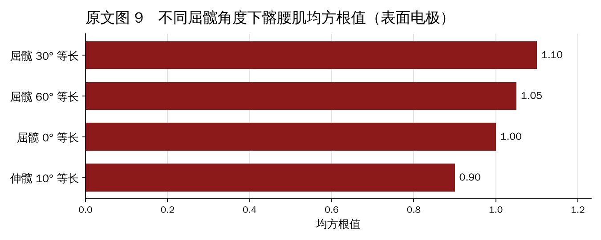
🔖原文图 9 不同屈髋角度下髂腰肌均方根值（中文重绘）
Jiroumaru 的表面电极数据：屈髋 30° 和 60° 时稍高，伸髋 10° 时最低。四个数之间差别其实不大（0.9～1.1）。
① 髂腰肌在躯干和骨盆稳定类动作里也会被动员，比如抗重力侧屈、侧卧髋外展、挺直腰坐，甚至抗阻屈伸膝。
② 腿在躯干上动（如放腿）比躯干在腿上动（如仰卧起坐）更能激活髂腰肌——仰卧起坐主要靠腹肌。
③ 开链长力臂（直腿抬高）比短力臂（屈膝仰卧屈髋）激活高，尤其是髂肌。
④ 闭链屈髋起身时，屈膝比伸膝激活更高。
⑤ 直腿抬高在 30°～60° 区间激活高于 0°～30°，因为阔筋膜张肌、缝匠肌在大角度时参与变少。
⑥ 双侧动作（如双腿放腿）激活更高，可能是对稳定的需求更大。
⑦ 加阻力（沙袋或水）一定会让激活上升。
这是全文最实用的部分。作者把上面的规律和临床经验结合起来，排了一个从“几乎不用力”到“负重双腿抬腿”的顺序。思路是先让髂腰肌当稳定肌、再让它当主动肌；先等长、后动态；先短力臂、后长力臂；最后才加离心和负重。
附表 A1 髂腰肌力量进阶方案
| 阶段 | 负重 | 形式 | 动作 | 参数 |
|---|---|---|---|---|
| 1（激活） | 非负重 | 静态 | 挺直腰背坐；坐位腰椎过度前凸 | 5×45 秒，每天 3 次，每周 7 天，共 1 周 |
| 2（激活） | 非负重 | 动态 | 侧卧蚌式开合；侧卧髋外展 | 每侧 3×10，每天 1 次，共 1 周 |
| 静态 | 坐位抗重力躯干侧屈 | 3×45 秒，每天 1 次，共 1 周 | ||
| 3（激活） | 非负重 → 单腿支撑 | 静态 | A. 坐位屈髋 90° 等长；B. 站立同侧屈髋 30° 等长 | 5×45 秒，每天 1 次；强度 25%→100% 最大收缩；A、B 各 1 周 |
| 3+（激活） | 单腿支撑 | 静态 | A. 站立同侧屈髋 60° 等长；B. 站立同侧屈髋 90° 等长 | 5×45 秒，每周 3～4 天；强度 25%→100%；A、B 各 1 周 |
| 4（力量） | 非负重 | 静态 | 仰卧直腿屈髋等长：A. 60°；B. 30°；C. 0° | 5×45 秒，每周 3～4 天；强度 25%→100%；每个 1 周 |
| 5（力量） | 非负重 | 动态 | A. 仰卧屈髋；B. 主动直腿抬高；C. 负重主动直腿抬高 | 3×12，每周 3～4 天；每个 1 周 |
| 6（力量） | 非负重 | 动态 | A. 屈膝卷腹；B. 伸膝、双脚固定的屈髋起身；C. 屈膝、双脚固定的屈髋起身 | 3×8，每周 3～4 天；每个 1 周 |
| 7（力量） | 非负重 | 动态 | A. 离心放腿；B. 负重离心放腿；C. 双腿抬腿；D. 负重双腿抬腿 | 3×8，每周 3～4 天；每个 1 周 |
附表 A2 各阶段目标与进阶标准
| 阶段 | 目标 | 进入下一阶段的标准 |
|---|---|---|
| 1 | 低水平激活 | 能按质量完成全部组数和次数；无痛 |
| 2 | 作为稳定肌间接激活 | 同上 |
| 3 / 3+ | 更高水平的直接激活 | 同上 + 能规律坚持 |
| 4 | 力量期开始：开链长力臂等长 | 同上 |
| 5 | 过渡到等张训练 | 同上 |
| 6 | 闭链等张训练 | 同上 + 能分清屈脊柱和屈髋 |
| 7 | 加入离心和双侧动作，高强度 | 同上 + 加负重后动作不变形 |
每个动作原文都配了起始、结束两张照片，按阶段整理如下：
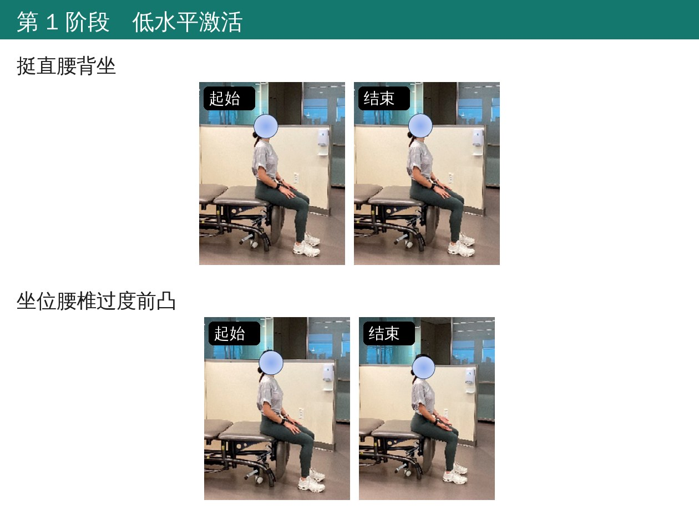
🔖第 1 阶段：挺直腰背坐、坐位腰椎过度前凸。几乎没有动作，目的是在不刺激的前提下唤醒髂腰肌
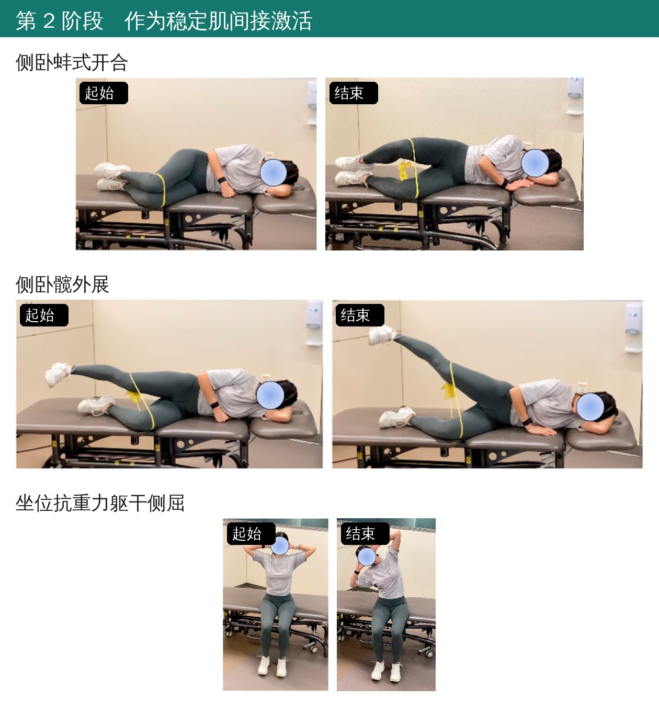
🔖第 2 阶段：蚌式、侧卧髋外展和坐位侧屈。髂腰肌在这里是“帮忙稳住”，不是主动屈髋
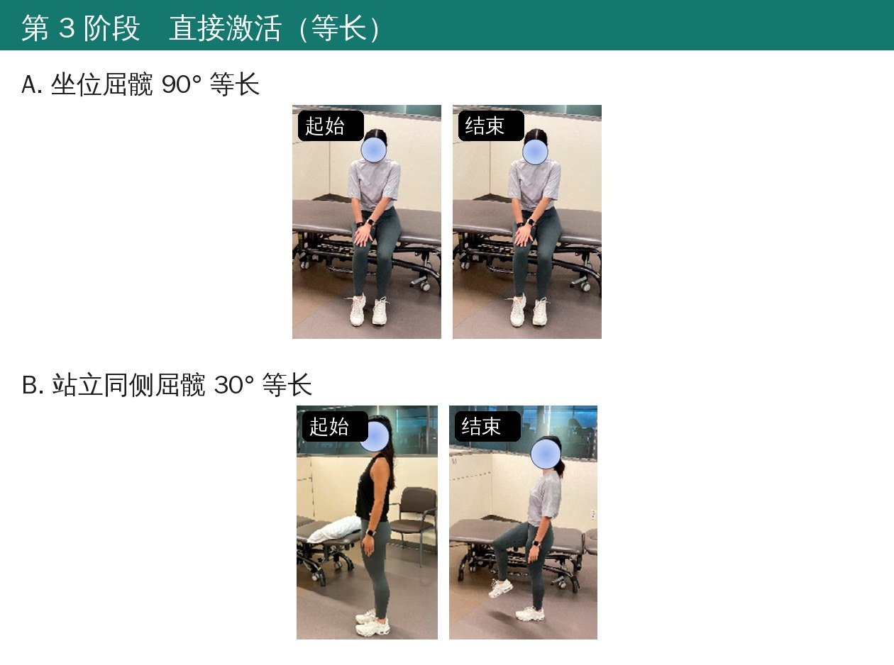
🔖第 3 阶段：坐位 90° 和站立 30° 屈髋等长，开始直接让髂腰肌发力
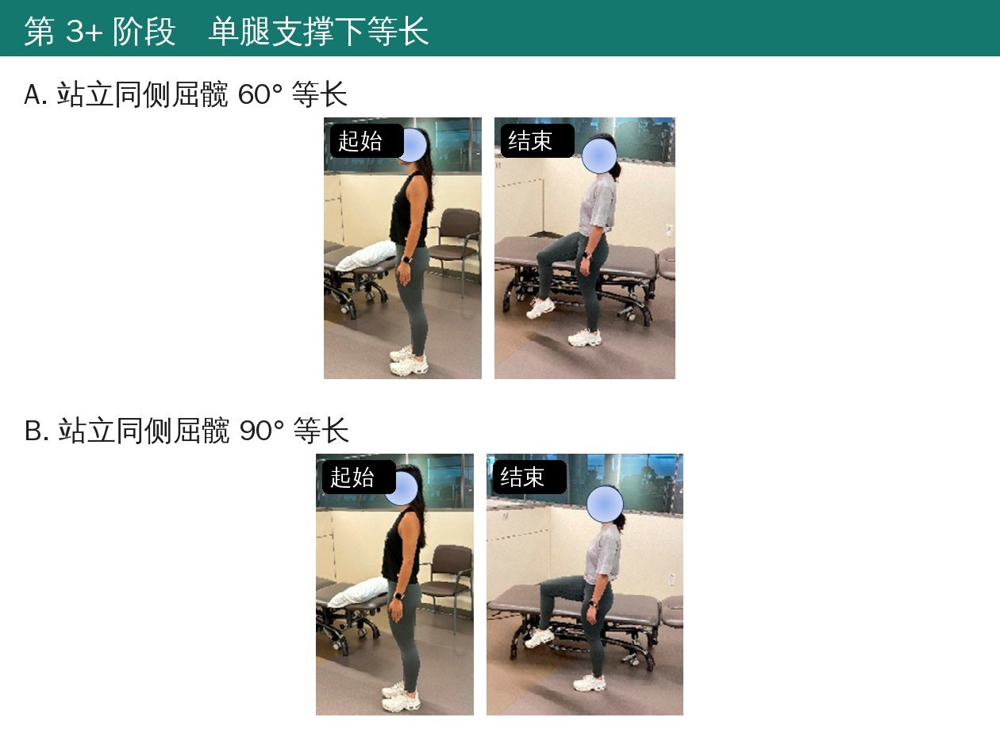
🔖第 3+ 阶段：站立位屈髋 60°、90° 等长，支撑腿同时要稳住骨盆
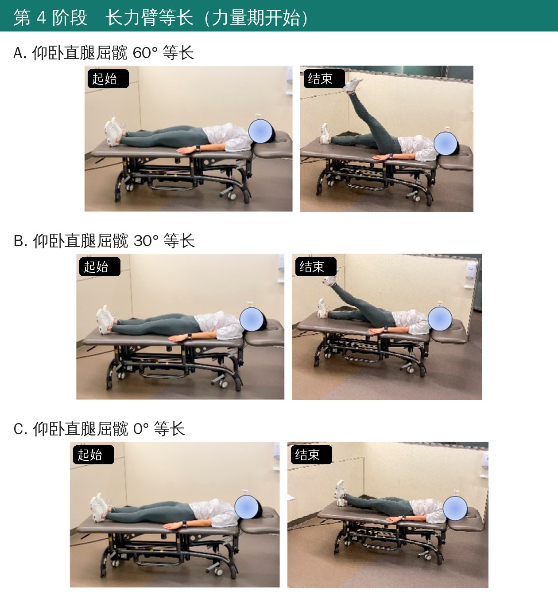
🔖第 4 阶段：仰卧直腿等长，顺序是 60° → 30° → 0°，力臂越来越长
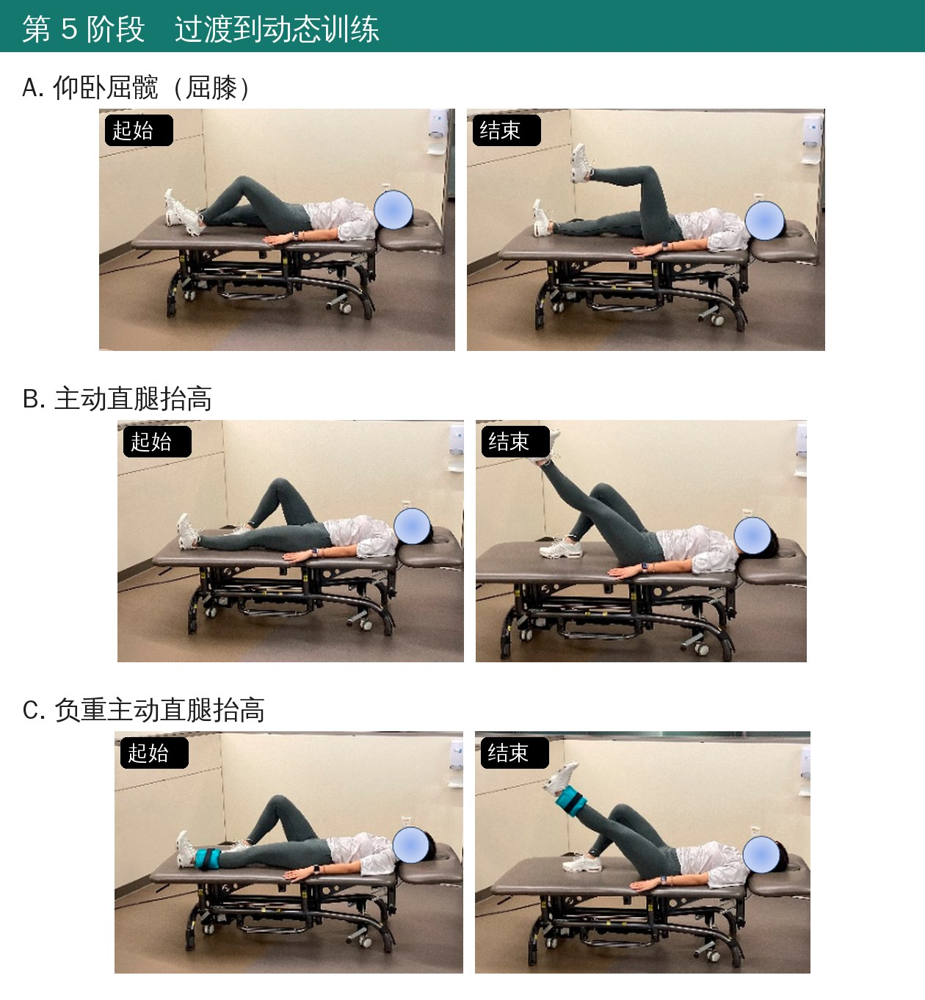
🔖第 5 阶段：从屈膝的仰卧屈髋，到直腿抬高，再到绑沙袋
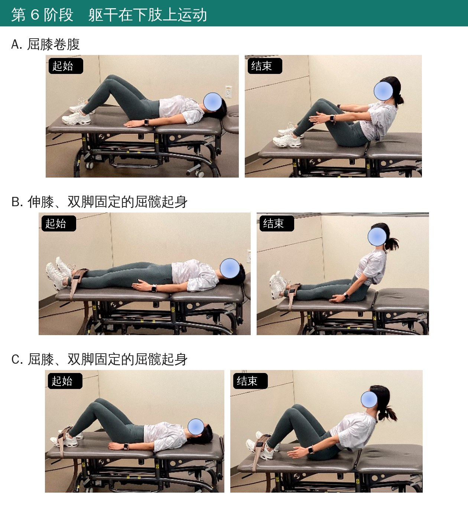
🔖第 6 阶段：躯干在下肢上动——卷腹、伸膝和屈膝的屈髋起身
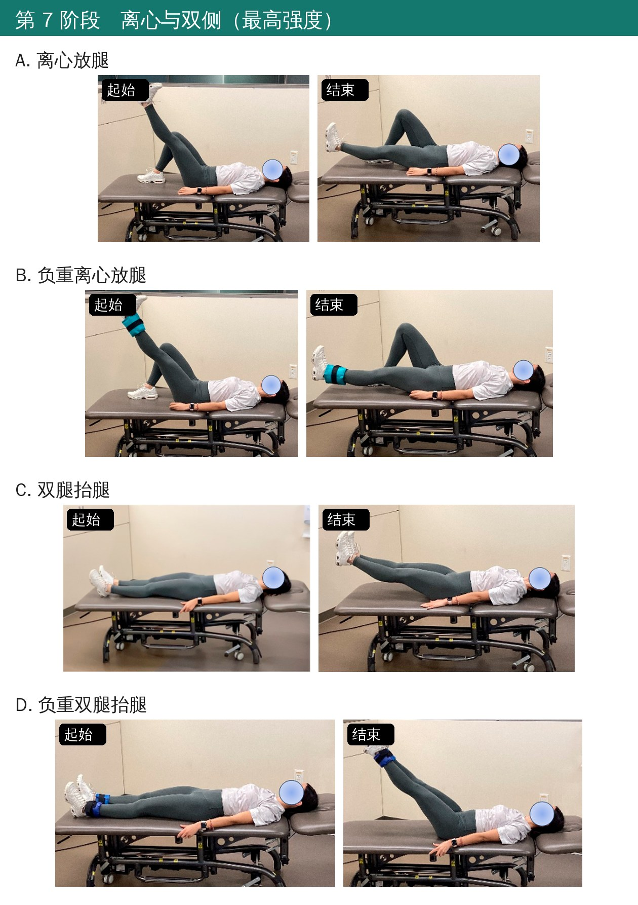
🔖第 7 阶段：离心放腿和双腿抬腿，最后加负重，是整个方案强度最高的部分
有个细节值得说一下：第 4 阶段为什么从 60° 开始、往 0° 退？按肌电数据，60° 时髂腰肌激活最高，按理说应该放在后面。作者的考虑是，60° 时阔筋膜张肌、缝匠肌参与少，髂腰肌更“单独”在工作，先在这个角度把它练起来，再去代偿多的低角度。这个逻辑说得通，不过也只是推理，没有数据验证。
这篇综述的价值主要在“把零散的数据摆到了一起”，但证据本身比较薄，用的时候心里要有数：
• 9 项研究全是健康年轻人，共 109 人，最小的研究只有 6 人。髋臼发育不良、微不稳、术后患者的激活模式是不是一样，完全不知道
• 9 篇研究的质量评分全部在“差”到“一般”之间，作者请来的肌电专家也认为多数研究的方法有明显缺陷
• %MVIC、振幅、均方根值三种单位混用，不同研究之间的数字没法比。图 4 里同一动作 60.8% 和 35% 的差距就是例子；图 8 把水浸实验（上百 µV）和康复动作（个位数 µV）画在同一张图里，也容易误读
• 两项研究用的是表面电极，髂腰肌位置深，信号很可能混入股直肌等浅层肌肉。作者自己在讨论里建议以后排除表面电极研究，但本文还是纳入了
• 肌电高不等于力量大、也不等于训练效果好。进阶方案的剂量（5×45 秒、3×12 等）和每阶段 1 周的安排，都来自临床经验，没有经过试验验证，作者也承认这只是“指南，不是处方”
• Okubo 2021 纳入 18 人，其中 9 人的数据被剔除，实际只有 9 人，但总人数仍按 18 计
• 一些小毛病：引言第一句把“髂腰肌”写成了“髂肌”；偏倚表里列了第 16 项，附录的量表条目却跳过了第 16 项；第 5 项满分 2 分，表里只按 0/1 计；图 8 有两个动作都标成“抗阻伸膝 向心”；检索截图里各数据库结果加起来（1897 条）和流程图里的 1883 条对不上
如果是髋前方不稳、髂腰肌明显薄弱的患者，这个进阶顺序可以直接拿来当框架：从坐姿、侧卧的稳定动作开始，过渡到等长，再到直腿抬高和放腿。每一步卡住的标准也很朴素——动作做得标准、不痛、能坚持。
反过来，如果是髂腰肌腱炎、弹响髋这类前方激惹的患者，图 8 里那些“髂腰肌很安静”的动作（臀桥、俯卧夹脚跟、侧卧髋外展）可以优先安排，而仰卧屈髋、直腿抬高、负重放腿要往后放。
至于剂量，原文给的只是参考。真正的强度和进度，还是得看患者当时的反应来调。
欢迎关注悦美力公众号，获取更多物理治疗的专业知识！
📄参考文献：
Juan J, Leff G, Kevorken K, Jeanfavre M. Hip Flexor Muscle Activation During Common Rehabilitation and Strength Exercises. J Clin Med. 2024;13(21):6617. doi:10.3390/jcm13216617
原文以 CC BY 4.0 协议开放获取。文中图表按原文数据中文重绘，动作照片来自原文附表 A3，仅用于学术交流。